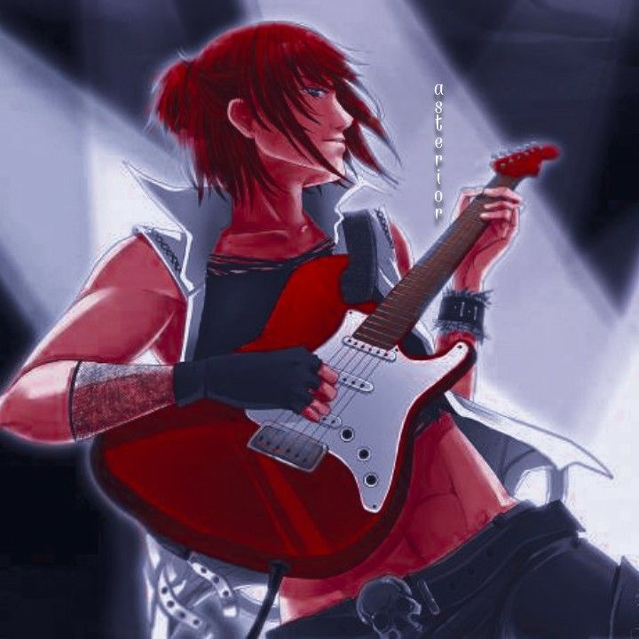
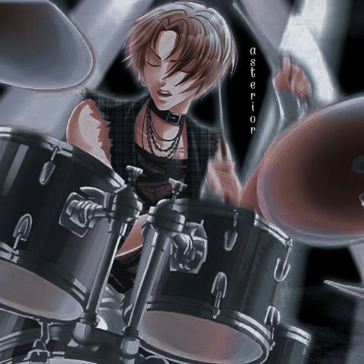
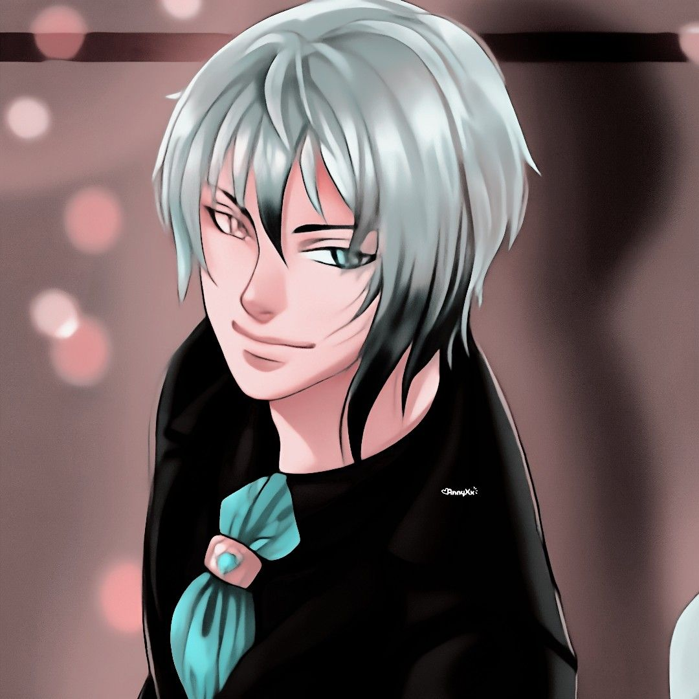

Crowstorm é uma banda teen de emo rock completamente independente, formada por jovens apaixonados por música. Com composições próprias e melodias intensas, a banda mistura sentimentos profundos com uma estética sombria e autêntica, apaixonando qualquer garota.

Guitarrista e vocal da banda. Personalidade intensa e presença marcante no palco. Rebelde, temperamento forte e o mais rockeiro do grupo visualmente. Enlouquece as garotas e coloca valentões pra correr (Já expulsou um boboca de um dos shows por importunação). Ama cães de grande porte e ás vezes uma boa briga.

Baterista da banda. Responsável pelo ritmo e pela base energética das músicas. é um garoto tímido, extremamente inteligente e considerado o mais responsável do grupo, muitas vezes visto como "certinho demais". No entanto, é no palco que ele se transforma, usando a música como escape para mostrar seu verdadeiro potencial no rock. Nas horas vagas, gosta de praticar boxe e também tocar piano.

Vocalista e compositor. Criador das letras profundas e emocionais da Crowstorm. É o mais romântico e sensível do grupo, reconhecido por seu estilo vitoriano único. Responsável por adicionar leveza e amor na intensidade da bateria e guitarra. Ama ler e escrever belas poesias em seu tempo livre.
| Música | Estilo | Duração |
|---|---|---|
| Join Me In Death | Love Metal | 3:36 |
| King For a Day | Post-Hardcore | 3:56 |
| Teenage Dirtbag | Alt Rock | 4:01 |
| Guys Dont Like Me | Pop Rock | 2:52 |